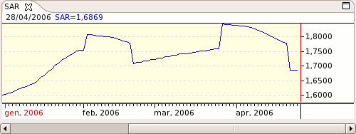

Parabolic SAR - SAR

Parameters
Add - The acceleration add value
Initial - The initial acceleration value
Limit - The acceleration limit
Color - SAR color
Line Type - SAR line type
Label - The text to identify the SAR plot